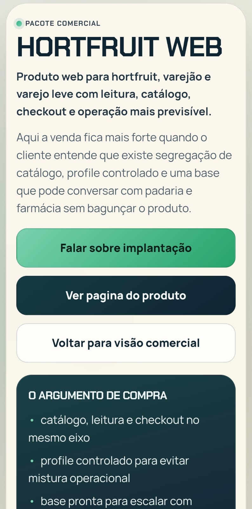
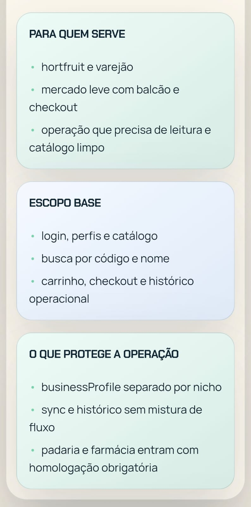

HORTFRUIT WEB
Web próprio para leitura, catálogo, carrinho e checkout em varejo leve e hortfruit.
A venda fica mais forte quando o cliente entende que existe segregação de catálogo, perfil controlado e uma base pronta para evoluir sem bagunçar o produto.
Catálogo
Busca e leitura de itens no fluxo do balcão.
Checkout em tempo real
Fechamento mais previsível e menos improviso.
Base pronta para mobile
Pode evoluir junto com o módulo complementar.
Por que esse pacote fecha
- catálogo, leitura e checkout no mesmo eixo
- base conversa com padaria e farmácia sem remendo
- fluxo de balcão com operação mais clara
Implantação
Parte de base validada, ajusta visual e regras do comércio. Mantém o web independente e preparado para integrar módulo mobile depois.
Resolve
- leitura de itens e organização do carrinho
- checkout em tempo real com menos improviso
- base mais clara para a operação diária
Escalabilidade
- base para padaria e farmácia por perfil controlado
- catálogo segregado para não misturar negócio
- preparado para integrar módulo mobile
Recorte principal

Recorte de apoio
